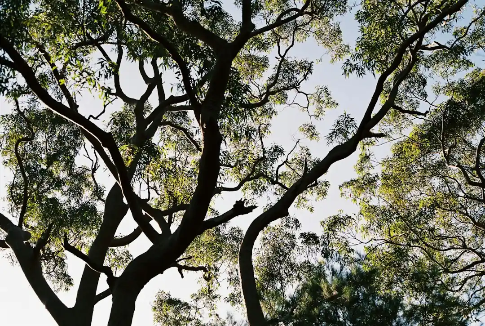

For Sydney owners, the core checks are scope, council position, access and quote clarity. The source page gives a 2026 residential removal range from about $800 for a small accessible tree to $6,000 or more for a large tree near buildings or power lines. It also points to qualified arborists, AS 4373 pruning, written quotes, stump grinding, arborist reports and council TPO checks as the main decision points before work starts.
For homeowners comparing tree services sydney options, the useful starting point is not a suburb list, but the tree, access, council setting and written scope.
Tree Services Sydney Explained
Sydney Tree Services presents tree care as a scoped job rather than a quick booking, which is the right way to approach work that may involve access, protected trees, power lines, disposal and stump grinding. A useful enquiry describes the tree, the suburb or postcode, the result wanted and anything that could affect access before anyone prices the work.
The source page separates removal, selective pruning, stump grinding, palm care, hedge trimming and arborist reports. Those categories matter because the right next step can change. A tree that only needs clearance from a structure is different from a tree being removed for development, and a stump left in place is a different job from one ground out and cleared.
- Describe whether the issue is removal, pruning, reporting, stump grinding or a mix of tasks.
- Say whether the tree is near buildings, fences, driveways or power lines.
- Ask whether council checks are needed before work is approved.
- Ask for disposal, timing and stump work to be stated in the written quote.
Council, TPO And Report Questions
The published FAQ says many Sydney councils require a permit or development consent before protected trees are removed or heavily pruned under a Tree Preservation Order or Development Control Plan. It also says rules vary by local government area and may use DBH thresholds or protected species lists. That makes council status a quote question, not an assumption.
An arborist report is listed for council, risk and development purposes. If a project relates to renovation, development or a neighbour concern, ask whether a report is needed before the cutting scope is finalised. That is especially important where the owner wants a fixed-price written quote, because a council outcome can change what work is allowed.
For a deeper removal-only view, this tree removal guide for Sydney properties sits beside the broader service discussion and is useful when the question has moved from tree care generally to whether a tree can or should be removed.
Pruning, Lopping And Arborist Standard
The source page draws a clear line between qualified arborist work and indiscriminate lopping. It says qualified arborists carry out selective pruning to Australian Standard AS 4373 and understand tree biology, risk and safe work practices, while tree lopping is described as indiscriminate cutting discouraged by modern arboriculture standards.
For owners, the practical question is how the proposed cuts will be chosen. Ask whether the work is selective pruning, palm care, hedge trimming, removal of a hazardous limb or full removal. A quote should make the intended outcome plain enough that the owner can compare like with like, rather than comparing one broad verbal estimate against another.
- For canopy work, ask how the proposed pruning relates to AS 4373.
- For a hazardous limb, ask whether the branch can be managed without removing the whole tree.
- For hedges and palms, ask whether disposal and cleanup are included.
- For complex removals, ask what rigging or access issues affect the scope.
Cost Signals Without Guesswork
The only price range stated in the source material is broad: in Sydney in 2026, typical residential tree removal ranges from around $800 for a small, accessible tree to $6,000 or more for a large tree near buildings or power lines. That range should be treated as indicative only, because the same page says exact pricing depends on tree size, species, access and whether stump grinding is included.
A tight quote starts with inputs, not persuasion. The owner should ask what is included, what is excluded and whether the price changes if council approval, access, power-line proximity or stump grinding changes the job. The source page says every project begins with a clear, itemised written quote, and that is the document to rely on before approving work.
The strongest comparison is not the lowest number by itself. It is a written scope that names the work, timing, disposal details and any conditions that must be resolved first.
Who This Applies To
This guide is for Sydney property owners trying to decide what kind of tree help to request before booking a visit. It applies to single hazardous limbs, pruning, full removals, stump grinding, arborist reports, emergency tree work and site clearances where the owner wants the scope clarified before approval.
The source page names coverage across the North Shore, Northern Beaches, Eastern Suburbs, Inner West, Hills District, Western Sydney and Sutherland Shire. Those regional references are useful only when they help frame local access and council questions. A narrow street, a protected tree or a tree near power lines is more relevant to the job than the suburb name alone.
Owners should treat the first enquiry as a fact-gathering step. Provide the suburb or postcode, describe the tree, explain the desired outcome and flag anything near the work area that could affect inspection, quoting or permissions.
- Describe the tree. State the suburb or postcode, tree position, access limits and the outcome wanted in plain terms.
- Ask about permissions. Check whether a Tree Preservation Order, Development Control Plan or council process may affect the work.
- Separate the services. Confirm whether the quote covers pruning, removal, stump grinding, reporting, disposal or a combination.
- Get the quote in writing. Ask for scope, timing, disposal details and conditions to be itemised before approving the job.
| Situation | Likely pathway | Quote question |
|---|---|---|
| Overgrown branches or shape issue | Selective pruning | Will the pruning be carried out to AS 4373? |
| Tree removal being considered | Removal assessment and council check | Is a permit, development consent or TPO check needed first? |
| Tree already cut or stump remaining | Stump grinding | Is stump grinding and disposal included in the written scope? |
| Council, risk or development question | Arborist report | What report purpose should be stated before inspection? |
Common questions
How much can tree removal cost in Sydney? The source page gives an indicative 2026 residential range of about $800 for a small accessible tree to $6,000 or more for a large tree near buildings or power lines. The exact price depends on tree size, species, access and whether stump grinding is included.
Do Sydney owners always need council permission? No single rule is stated for every property. The source page says many Sydney councils require a permit or development consent for protected trees under a TPO or Development Control Plan, and that owners should check their specific council.
What should be in a written quote? A useful quote should set out the scope, timing and disposal details. It should also make clear whether stump grinding, council-related steps or access constraints affect the work.
Why ask for an arborist rather than just tree cutting? The source page says qualified arborists carry out selective pruning to AS 4373 and understand tree biology, risk and safe work practices. It contrasts that with indiscriminate lopping, which is discouraged by modern arboriculture standards.
This guide covers Sydney tree care scoping, council questions, pruning standards, quote inputs and owner checks before approval.